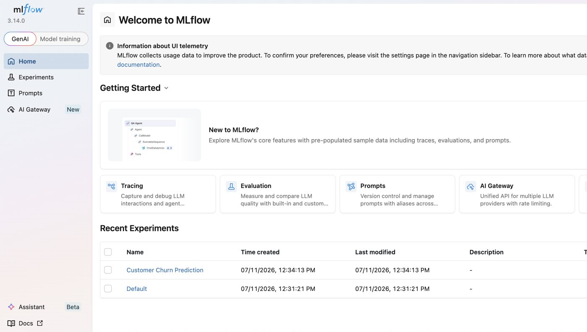
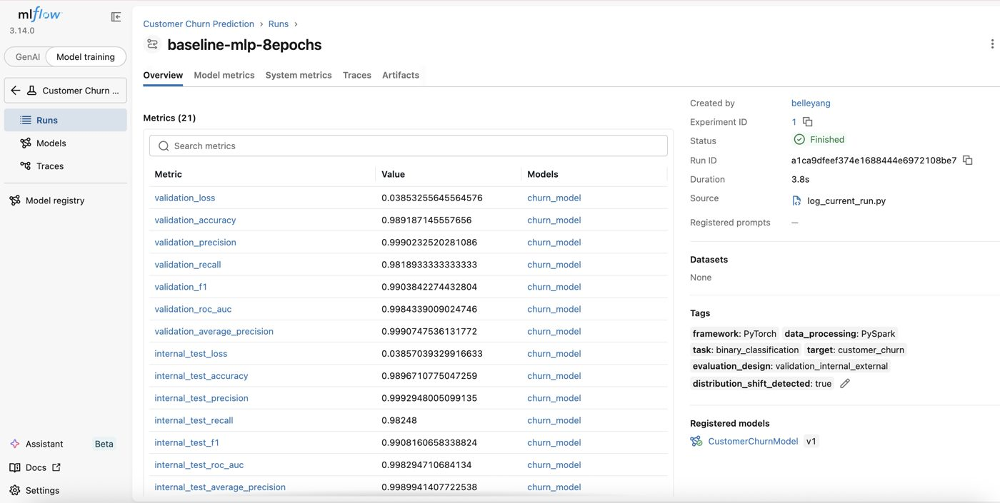
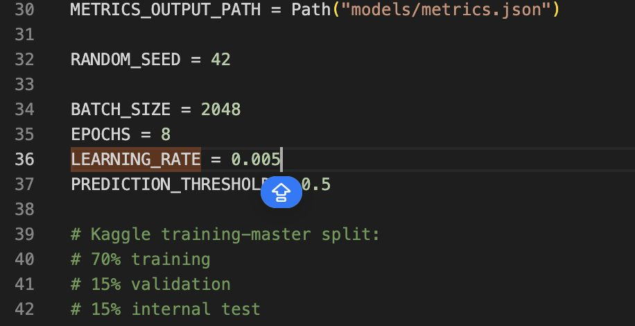
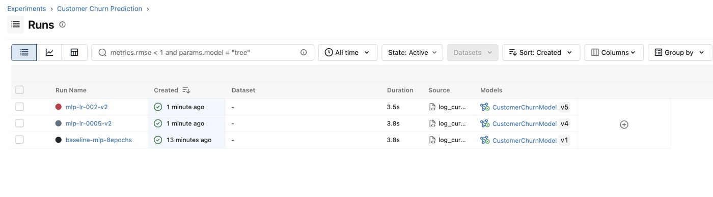
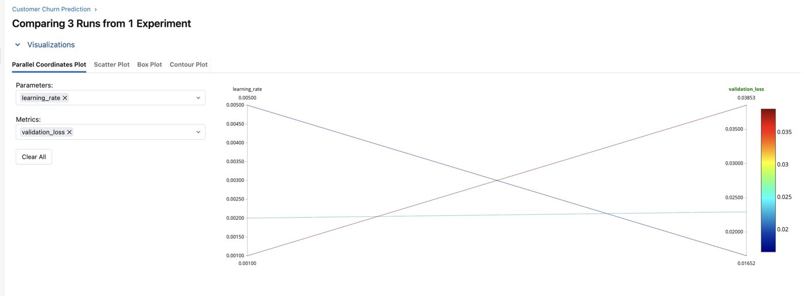
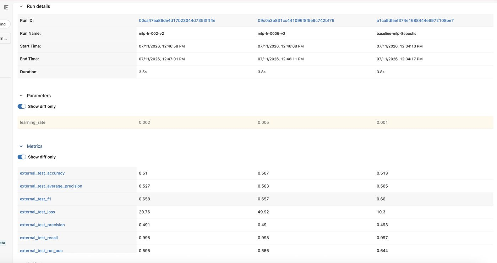

Customer Churn MLOps Pipeline
An MLOps pipeline for customer churn prediction — PySpark for data processing, a PyTorch MLP for classification, and MLflow tracking every run's parameters, metrics, and model versions end to end.
Getting past "it works on my validation set."
A churn model is easy to fool with itself — post a great validation score and it's tempting to call it done, even if what it learned doesn't hold up on anything outside that slice of data. This pipeline treats that risk as something to design against from the start, not catch later. Training and internal validation stay in one split; a separate external test set exists purely to answer one question — did the model generalize, or did it just memorize the validation set?
Data → training → tracking
PySpark handles the data-processing stage on the raw Kaggle dataset, a PyTorch MLP is trained on the result, and every run — parameters, metrics, and the resulting model — is logged to MLflow for comparison and versioning.
What it's built with
Tracking a model from run to comparison
MLflow is the through-line here — every experiment, hyperparameter, and metric shown below is logged automatically as part of the training run.

distribution_shift_detected: true.

CustomerChurnModel in the registry — v1, v4, v5 — so any run's model is retrievable later. Each sweep is just two lines changed before re-running the script: the learning rate, and a matching run name so it's identifiable in MLflow later.


What the external test set caught
Internal validation numbers look strong across every run — accuracy above 98%, ROC AUC above 0.99. Run the same
models against the external test split, though, and accuracy drops to roughly 50–51% — essentially chance for a
binary classifier. That gap is exactly what the distribution_shift_detected
tag is flagging: the model learned patterns specific to the internal split that don't transfer.
| Run | Learning rate | Internal test accuracy | External test accuracy |
|---|---|---|---|
| baseline-mlp-8epochs | 0.001 | 98.97% | 51.3% |
| mlp-lr-0005-v2 | 0.005 | ~99% | 50.7% |
| mlp-lr-002-v2 | 0.002 | ~99% | 51.0% |
Tuning the learning rate alone didn't close the gap — external accuracy stayed pinned near chance across all three runs. That points to the issue being about data (feature distribution, leakage, or split construction) rather than model capacity or optimization, and it's the natural next thing to dig into.